<meta charset="utf-8">
<title>Hostel Buddy — 80% Implementation Report</title>
<script>window.PagedConfig={auto:true,after:()=>{window.__PAGED_DONE=true;}};</script>
<style>
  :root{ --ink:#1a1a1a; --muted:#555; --line:#bcbcbc; --soft:#e7e7e7;
         --accent:#1f4e79; --accent2:#2e75b6; --green:#2f6b2f; --amber:#8a6111; --red:#a12626; }
  @page{ size:A4; margin:19mm 17mm 17mm 17mm;
    @top-right{ content:string(doctitle); font-family:Georgia,serif; font-size:8.5pt; color:#888; }
    @bottom-center{ content:"Page " counter(page); font-family:Georgia,serif; font-size:9pt; color:#666; } }
  @page :first{ @top-right{content:none;} @bottom-center{content:none;} }
  html{ font-family:Georgia,"Times New Roman",serif; color:var(--ink); font-size:10.4pt; line-height:1.48; }
  body{ margin:0; }
  h1,h2,h3,h4{ font-family:"Segoe UI",Arial,sans-serif; color:var(--accent); line-height:1.25; }
  h1{ string-set:doctitle "Hostel Buddy — 80% Implementation Report"; }
  h2{ font-size:15pt; margin-top:1.1em; border-bottom:2px solid var(--soft); padding-bottom:3px; break-after:avoid; }
  h3{ font-size:12pt; margin-top:.9em; break-after:avoid; }
  h4{ font-size:10.6pt; margin-top:.7em; color:var(--accent2); break-after:avoid; }
  p{ margin:.4em 0; text-align:justify; }
  ul,ol{ margin:.3em 0 .55em 0; padding-left:1.3em; }
  li{ margin:.2em 0; }
  code{ font-family:Consolas,monospace; font-size:8.9pt; background:#f2f2f2; padding:0 3px; border-radius:3px; }
  table{ border-collapse:collapse; width:100%; margin:.5em 0; font-size:9.3pt; }
  th,td{ border:1px solid var(--line); padding:4.5px 7px; text-align:left; vertical-align:top; }
  th{ background:var(--accent); color:#fff; font-family:"Segoe UI",Arial,sans-serif; font-weight:600; }
  tr:nth-child(even) td{ background:#f6f8fb; }
  .break{ break-before:page; }
  .avoid{ break-inside:avoid; }
  .pill{ display:inline-block; padding:1.5px 9px; border-radius:11px; font-size:8.3pt; font-weight:600; font-family:"Segoe UI",Arial,sans-serif; white-space:nowrap; }
  .done{ background:#e6f2e6; color:var(--green); border:1px solid #bcdcbc; }
  .part{ background:#fdf4e6; color:var(--amber); border:1px solid #ecd6ac; }
  .todo{ background:#f3f4f6; color:#4b5563; border:1px solid #d3d6db; }
  .none{ background:#f6f6f6; color:#8a8a8a; border:1px solid #e0e0e0; }
  .box,.warn,.bug,.viva{ background:#f4f8fc; border-left:4px solid var(--accent2);
       padding:9px 13px; margin:.75em 0; font-size:9.8pt; break-inside:avoid; border-radius:0 4px 4px 0; }
  .box b{ color:var(--accent); }
  .warn{ background:#fdf6ee; border-left-color:#c98a17; }
  .warn b{ color:var(--amber); }
  .bug{ background:#fdecec; border-left-color:var(--red); }
  .bug b{ color:var(--red); }
  .viva{ background:#eef7ef; border-left-color:var(--green); }
  .viva b{ color:var(--green); }
  .box .lbl,.warn .lbl,.bug .lbl,.viva .lbl{ font-family:"Segoe UI",Arial,sans-serif; font-weight:700; font-size:8.4pt;
       text-transform:uppercase; letter-spacing:.6px; color:#fff; background:var(--accent2);
       padding:1px 7px; border-radius:9px; }
  .warn .lbl{ background:#c98a17; }
  .bug .lbl{ background:var(--red); }
  .viva .lbl{ background:var(--green); }
  figure{ margin:.7em 0 .9em; break-inside:avoid; text-align:center; }
  /* Screen captures are wide and shallow; capping the height lets two sit on
     one page instead of one per page with a blank half beneath it. */
  figure.shot img{ max-height:99mm; width:auto; }
  figure img{ max-width:100%; height:auto; border:1px solid var(--soft); border-radius:4px; }
  figure.plain img{ border:none; }
  figcaption{ font-size:8.6pt; color:var(--muted); margin-top:4px; font-style:italic; text-align:left; }
  figcaption b{ font-style:normal; color:var(--accent); }
  .ms-head{ background:linear-gradient(90deg,#1f4e79,#2e75b6); color:#fff; padding:9px 15px; border-radius:7px;
            font-family:"Segoe UI",Arial,sans-serif; margin-top:1em; break-after:avoid; }
  .ms-head .pc{ font-size:20pt; font-weight:700; }
  .ms-head .ti{ font-size:12.5pt; font-weight:600; }
  .ms-head .dt{ font-size:9pt; opacity:.9; }
  .cover{ height:250mm; display:flex; flex-direction:column; align-items:center; justify-content:center; text-align:center; }
  .cover .kick{ font-family:"Segoe UI",Arial,sans-serif; letter-spacing:3px; text-transform:uppercase; color:var(--muted); font-size:10.5pt; }
  .cover .title{ font-family:"Segoe UI",Arial,sans-serif; font-size:38pt; font-weight:700; color:var(--accent); margin:6px 0 2px; }
  .cover .sub{ font-size:12pt; color:var(--muted); }
  .cover .rule{ width:120px; height:4px; background:var(--accent2); margin:15px auto; border-radius:2px; }
  .cover .badge{ font-family:"Segoe UI",Arial,sans-serif; font-size:15pt; font-weight:700; color:#fff;
                 background:linear-gradient(90deg,#2e75b6,#1f4e79); padding:8px 24px; border-radius:24px; }
  .cover .meta{ margin-top:24px; font-size:11pt; line-height:1.85; }
  .cover .meta b{ color:var(--accent); }
  .kpi{ display:flex; gap:9px; margin:.7em 0; break-inside:avoid; }
  .kpi div{ flex:1; text-align:center; border:1px solid var(--soft); border-radius:6px; padding:7px 4px; background:#f9fbfd; }
  .kpi .n{ font-family:"Segoe UI",Arial,sans-serif; font-size:16pt; font-weight:700; color:var(--accent); display:block; }
  .kpi .l{ font-size:8.2pt; color:var(--muted); }
  .bar{ height:13px; background:var(--soft); border-radius:7px; overflow:hidden; margin:.35em 0 .1em; }
  .bar span{ display:block; height:100%; background:linear-gradient(90deg,#2e75b6,#1f4e79); }
  .sig{ margin-top:26px; display:flex; justify-content:space-between; font-size:9.5pt; }
  .sig div{ width:44%; border-top:1px solid var(--line); padding-top:5px; text-align:center; color:var(--muted); }
  .cmp{ font-family:"Segoe UI",Arial,sans-serif; font-size:9.6pt; font-weight:600; color:#fff;
        background:var(--accent); padding:3px 11px; border-radius:5px; display:inline-block; margin-top:.9em; }
</style>

<!-- ==================== COVER ==================== -->
<section class="cover">
  <div class="kick">Implementation Progress Report</div>
  <div class="title">Hostel&nbsp;Buddy</div>
  <div class="sub">Smart Hostel Complaint Management System</div>
  <div class="rule"></div>
  <div class="badge">30% &nbsp;·&nbsp; 50% &nbsp;·&nbsp; 80%</div>
  <div class="meta">
    <div><b>Group 19</b></div>
    <div>Department of Computer Science and Engineering</div>
    <div><b>IIIT Kottayam</b></div>
    <div style="margin-top:12px"><b>Status:</b> 80% implementation complete</div>
  </div>
</section>

<!-- ==================== TEAM + PURPOSE ==================== -->
<section class="break">
  <h2 style="margin-top:0">1. Team Members</h2>
  <table>
    <tr><th style="width:50px">#</th><th>Member Name</th><th style="width:32%">Roll Number</th></tr>
    <tr><td>1</td><td>Pranjal Tyagi</td><td>2024BCD0053</td></tr>
    <tr><td>2</td><td>Dinesh Saini</td><td>2024BCD0033</td></tr>
    <tr><td>3</td><td>Ajinkya</td><td>2024BCS0173</td></tr>
    <tr><td>4</td><td>Saurabh</td><td>2024BCS0185</td></tr>
    <tr><td>5</td><td>Vijay</td><td>2024BCS0249</td></tr>
  </table>

  <h2>2. Purpose of This Report</h2>
  <p>This report records how <b>Hostel Buddy</b> was built from an empty repository to a working
  system that is <b>80% complete</b>, and it is organised around the three implementation
  milestones set for the project: <b>30%</b>, <b>50%</b> and <b>80%</b>.</p>

  <p>The project is tracked through <b>four components</b>, which are the deliverables named for
  the milestones. Each one is followed through all three milestones, so it is always clear what
  state a given part of the system was in and what was added to it next:</p>
  <table>
    <tr><th style="width:24%">Component</th><th>What it covers</th></tr>
    <tr><td><b>Git repository</b></td><td>Version control, branching discipline, commit structure, continuous integration</td></tr>
    <tr><td><b>Project skeleton</b></td><td>The folder and layer structure — where each kind of code lives and what may call what</td></tr>
    <tr><td><b>Database setup</b></td><td>The schema, its constraints, the seed data and how the schema is applied</td></tr>
    <tr><td><b>Login module</b></td><td>Registration, authentication, tokens, roles and every access guard built on them</td></tr>
  </table>

  <p>For each milestone the report gives the <b>phases completed</b>, what was done to each of the
  four components, <b>which part of each module</b> was finished, the <b>problems we faced</b> with
  their root causes and fixes, and how the milestone was verified. Section 10 then shows the
  application actually running, screen by screen.</p>

  <h3>2.1 How to read this document</h3>
  <table>
    <tr><th style="width:23%">Marker</th><th>Meaning</th></tr>
    <tr><td><span class="pill done">Complete</span></td><td>Built, tested and committed at that milestone.</td></tr>
    <tr><td><span class="pill part">Partial</span></td><td>Working, but extended at a later milestone.</td></tr>
    <tr><td><span class="pill none">Not started</span></td><td>Not begun at that milestone.</td></tr>
    <tr><td><div class="bug" style="margin:0;padding:5px 9px"><span class="lbl">Bug</span></div></td>
        <td>A defect that reached working code and had to be fixed.</td></tr>
    <tr><td><div class="warn" style="margin:0;padding:5px 9px"><span class="lbl">Problem</span></div></td>
        <td>An obstacle or design dilemma — not a defect, but it cost us time.</td></tr>
    <tr><td><div class="viva" style="margin:0;padding:5px 9px"><span class="lbl">Lesson</span></div></td>
        <td>What we carried forward into the next milestone.</td></tr>
  </table>

  <h3>2.2 Development model</h3>
  <p>We worked in an <b>incremental, phase-wise model</b>. The project was cut into numbered phases
  before any code was written, each ending in a runnable system with its own tests, and nothing was
  merged until the whole suite passed. This is why any milestone can be demonstrated on demand:
  there is no point in the history where the application does not start.</p>
  <div class="box"><span class="lbl">Why not waterfall</span><br>
  Our requirements changed mid-project — the instructor supplied a revised ER model with three user
  roles after the two-role system was already working. A waterfall plan would have made that a
  crisis. Because every layer was isolated and covered by tests, the change was carried out as
  seven small phases with the suite green at the end of each one.</div>
</section>

<!-- ==================== OVERVIEW ==================== -->
<section class="break">
  <h2 style="margin-top:0">3. Milestone Overview</h2>
  <div class="bar"><span style="width:80%"></span></div>
  <p style="text-align:center;font-size:9pt;color:#555;margin-top:2px">
  <b>80% complete</b> — the 30%, 50% and 80% milestones are delivered; the final 20% is listed in Section 11</p>

  <h3>3.1 Phases completed at each milestone</h3>
  <table>
    <tr><th style="width:9%">Milestone</th><th style="width:30%">Phases</th><th>What those phases produced</th></tr>
    <tr><td><b>30%</b></td>
        <td>Phase 0 — Project Foundation<br>Phase 1 — Authentication &amp; Accounts</td>
        <td>A repository, the layered skeleton, the database applied at start-up, and a complete
            login module with role guards</td></tr>
    <tr><td><b>50%</b></td>
        <td>Phase 2 — Complaint Core<br>Review pass<br>Phase 3 — Admin Complaint Management<br>
            Phase 4 — Dashboards &amp; Analytics<br>Phase 5 — Frontend UI</td>
        <td>The complaint lifecycle, the staff queue with search and status workflow, statistics for
            both roles, and the complete web interface over all of it</td></tr>
    <tr><td><b>80%</b></td>
        <td>Phase 6 — Hardening &amp; Docs<br>Audit pass<br>Phases A–E, G — schema v2 migration<br>
            Phase F — video attachments<br>Fix batches 1–2</td>
        <td>Security hardening, an audit that found fifteen defects, the integration test harness and
            CI, the three-role multi-hostel model, and video on complaints</td></tr>
  </table>

  <h3>3.2 The four components across the three milestones</h3>
  <table>
    <tr><th style="width:19%">Component</th><th style="width:27%">At 30%</th><th style="width:27%">At 50%</th><th>At 80%</th></tr>
    <tr><td><b>Git repository</b></td>
        <td>Initialised; secrets excluded; one commit per phase</td>
        <td>Phase-per-commit continued; design documents added</td>
        <td>Continuous integration runs the suite on every push; migration done as seven separate commits</td></tr>
    <tr><td><b>Project skeleton</b></td>
        <td>Four layers created: config, database, middleware, modules</td>
        <td>Complaints and dashboard modules added; the whole front end added</td>
        <td>Hostels module, test harness and the page-guard layer added</td></tr>
    <tr><td><b>Database setup</b></td>
        <td>Two tables applied at start-up with constraints and foreign keys</td>
        <td>Complaint table completed; indexes and a repeatable seed added</td>
        <td>Migrated to <b>six tables</b> with an ISA hierarchy and hostel scoping</td></tr>
    <tr><td><b>Login module</b></td>
        <td>Register, login, hashing, tokens, two roles</td>
        <td>Guards applied to every new route; profile management</td>
        <td>Rebuilt on <b>three roles</b>; managers provisioned, not self-registered; guards verified against the server</td></tr>
  </table>

  <h3>3.3 The system as it stands</h3>
  <div class="kpi">
    <div><span class="n">6</span><span class="l">database tables</span></div>
    <div><span class="n">3</span><span class="l">user roles</span></div>
    <div><span class="n">17</span><span class="l">API endpoints</span></div>
    <div><span class="n">12</span><span class="l">web pages</span></div>
    <div><span class="n">265</span><span class="l">automated checks</span></div>
    <div><span class="n">0</span><span class="l">failing checks</span></div>
  </div>

  <h3>3.4 Technology used</h3>
  <table>
    <tr><th style="width:20%">Layer</th><th>Technology</th><th style="width:36%">Why</th></tr>
    <tr><td>Front end</td><td>HTML5, CSS3, vanilla JavaScript, Chart.js</td>
        <td>No build step, so any team member can open the project and run it</td></tr>
    <tr><td>Back end</td><td>Node.js + Express, layered routes → controllers → services → repositories</td>
        <td>Each layer has one job, which is what made the later migration survivable</td></tr>
    <tr><td>Database</td><td>Node's built-in <code>node:sqlite</code></td>
        <td>No native compiler needed — see Problem P-1</td></tr>
    <tr><td>Authentication</td><td>JWT + bcrypt, role-based access control</td>
        <td>Stateless, matching the scaling requirement in the SRS</td></tr>
    <tr><td>Security</td><td>Helmet headers with CSP, rate-limited login, byte-level upload checks</td>
        <td>Added in hardening and strengthened by the audit</td></tr>
    <tr><td>Testing</td><td>Integration harness over real HTTP, GitHub Actions</td>
        <td>Exercises the running API, not mocks</td></tr>
  </table>
</section>

<!-- ==================== 30% ==================== -->
<section class="break">
  <div class="ms-head"><span class="pc">30%</span> &nbsp;<span class="ti">Git Repository · Project Skeleton · Login Module · Database Setup</span><br>
  <span class="dt">Phase 0 — Project Foundation &nbsp;·&nbsp; Phase 1 — Authentication &amp; Accounts</span></div>

  <h3>4.1 Phases completed at this milestone</h3>
  <table>
    <tr><th style="width:22%">Phase</th><th style="width:30%">Module worked on</th><th>Part of the module completed</th></tr>
    <tr><td><b>Phase 0</b><br>Project Foundation</td>
        <td>Application core — <code>config</code>, <code>db</code>, <code>middleware</code></td>
        <td>Express application assembled; typed configuration object; fixed category and status
            constants; database connection; schema applied at start-up; central error handler;
            request logger; <code>GET /api/health</code></td></tr>
    <tr><td><b>Phase 1</b><br>Authentication &amp; Accounts</td>
        <td><code>modules/auth</code> and <code>modules/users</code></td>
        <td>User repository; registration and login services; password hashing; token issue and
            verification; <code>requireAuth</code> and <code>requireRole</code>; seeded
            administrator; profile read and update; administrator's student list</td></tr>
  </table>

  <h3>4.2 Git repository</h3>
  <ul>
    <li>Repository initialised and pushed, with <code>.gitignore</code> excluding secrets, the
        database file, uploaded files and <code>node_modules</code>.</li>
    <li><code>.env.example</code> committed in place of the real <code>.env</code>, so a teammate
        knows exactly which variables to set without a secret ever entering history.</li>
    <li><b>One commit per phase</b>, each with a message describing what changed and why, so the
        history reads as a build log rather than a dump of work.</li>
  </ul>

  <h3>4.3 Project skeleton</h3>
  <p>A four-layer structure was created and has not needed to change since:</p>
  <table>
    <tr><th style="width:24%">Folder</th><th>Responsibility</th></tr>
    <tr><td><code>src/config/</code></td><td>Environment variables read once into a typed object; fixed enumerations</td></tr>
    <tr><td><code>src/db/</code></td><td>The single database connection, the schema, and the seed script</td></tr>
    <tr><td><code>src/middleware/</code></td><td>Cross-cutting concerns: authentication, error handling, logging, uploads, security headers</td></tr>
    <tr><td><code>src/modules/</code></td><td>One folder per feature, each containing its <b>routes → controller → service → repository</b></td></tr>
    <tr><td><code>src/utils/</code></td><td>Token helpers and validation predicates shared across modules</td></tr>
  </table>
  <div class="box"><span class="lbl">The rule that holds it together</span><br>
  Only a <b>repository</b> may write SQL, and only a <b>service</b> may hold a business rule. A
  controller does nothing but translate HTTP into a service call. This is what allowed the database
  model to be replaced at 80% without rewriting the application.</div>

  <h3>4.4 Database setup</h3>
  <ul>
    <li><code>schema.sql</code> is applied automatically when the server starts and is written to be
        <b>idempotent</b>, so a fresh clone needs no separate migration step.</li>
    <li>Two tables at this stage — <code>users</code> and <code>complaints</code> — matching the
        original design.</li>
    <li>Category and status columns carry SQL <code>CHECK</code> constraints, so an invalid value is
        refused by the database even if application code has a bug.</li>
    <li>Foreign keys enforced with <code>PRAGMA foreign_keys = ON</code>; write-ahead logging
        enabled for better read concurrency.</li>
  </ul>

  <h3>4.5 Login module</h3>
  <table>
    <tr><th style="width:32%">Part</th><th>What it does</th><th style="width:14%">State</th></tr>
    <tr><td>Registration</td><td>Validates the input, rejects a duplicate email, hashes the password with bcrypt, creates the account</td><td><span class="pill done">Complete</span></td></tr>
    <tr><td>Login</td><td>Verifies the password against the stored hash and issues a signed token carrying the user id and role</td><td><span class="pill done">Complete</span></td></tr>
    <tr><td>Token verification</td><td><code>requireAuth</code> rejects a missing, malformed, expired or forged token</td><td><span class="pill done">Complete</span></td></tr>
    <tr><td>Role guard</td><td><code>requireRole</code> restricts a route to named roles</td><td><span class="pill part">Partial</span> — two roles; rebuilt for three at 80%</td></tr>
    <tr><td>Seeded administrator</td><td>Created on first start from environment variables, so the system is usable immediately</td><td><span class="pill done">Complete</span></td></tr>
    <tr><td>Profile</td><td>Read and update own account; email and role are not editable</td><td><span class="pill done">Complete</span></td></tr>
  </table>

  <h3>4.6 Module completion at this milestone</h3>
  <table>
    <tr><th style="width:26%">Module</th><th>Status at 30%</th></tr>
    <tr><td>Authentication</td><td><span class="pill done">Complete</span> for the two-role model</td></tr>
    <tr><td>Users / profile</td><td><span class="pill done">Complete</span></td></tr>
    <tr><td>Complaints</td><td><span class="pill none">Not started</span> — table exists, no endpoints</td></tr>
    <tr><td>Dashboards</td><td><span class="pill none">Not started</span></td></tr>
    <tr><td>Hostels</td><td><span class="pill none">Not started</span> — introduced by the revised model at 80%</td></tr>
    <tr><td>Front end</td><td><span class="pill none">Not started</span> — API only at this stage</td></tr>
  </table>
</section>

<section>
  <h3 style="margin-top:0">4.7 Problems faced, and how we solved them</h3>

  <div class="bug"><span class="lbl">Problem P-1</span> — <b>The database library would not install.</b><br>
  <b>What happened:</b> Our technical design named <code>better-sqlite3</code>. Installing it starts
  a native C++ build through <code>node-gyp</code>, which failed on a team machine without Visual
  Studio build tools. A group project graded on several different machines cannot depend on a
  compiler toolchain being present.<br>
  <b>How we solved it:</b> Switched to Node's built-in <code>node:sqlite</code>, which offers the
  same synchronous prepared-statement API with no native compilation. The SQL and the schema did not
  change at all — only the connection module.<br>
  <b>Trade-off we accepted:</b> <code>node:sqlite</code> is still marked experimental and prints a
  warning, which we silence in the npm scripts. Because all SQL is confined to the repository layer,
  moving back to <code>better-sqlite3</code> or on to PostgreSQL would touch two files.</div>

  <div class="bug"><span class="lbl">Bug B-2</span> — <b>The login page told attackers which emails exist.</b><br>
  <b>What happened:</b> Signing in with an unknown address returned "no such user", while a known
  address with the wrong password returned "wrong password". Anyone could therefore discover which
  email addresses had accounts simply by trying them — a user-enumeration weakness.<br>
  <b>How we solved it:</b> Both failures now return the same generic <code>401 Invalid
  credentials</code>.<br>
  <b>Lesson:</b> Security messages should be deliberately vague; ordinary usability messages should
  be specific. Knowing which of the two you are writing is the whole skill.</div>

  <div class="warn"><span class="lbl">Problem P-3</span> — <b>Where should business rules live?</b><br>
  <b>The dilemma:</b> The rule "a student may only edit a complaint while it is Pending" could be
  checked in the route handler in two lines. We debated this properly, because it sets the pattern
  for the entire codebase.<br>
  <b>What we decided:</b> Enforce it in the <b>service layer</b>. A route-level check protects one
  route; if a second entry point ever calls the same operation — a bulk action, an admin tool, a
  test helper — a route-only guard is silently bypassed.<br>
  <b>Why it mattered later:</b> This decision is the reason the three-role migration at 80% was
  possible at all. Because every rule already lived in the services, changing who may do what meant
  changing services, not hunting through routes.</div>

  <div class="warn"><span class="lbl">Problem P-4</span> — <b>The seeded administrator silently failed to appear.</b><br>
  <b>What happened:</b> <code>.env</code> is deliberately not committed. On a fresh clone the admin
  password variable was therefore unset, the seed quietly created nothing, and the next person could
  not log in — with no error explaining why.<br>
  <b>How we solved it:</b> Added a start-up check that prints a clear warning when a required
  variable is missing, shipped <code>.env.example</code> as a template, and made the application
  <b>refuse to start in production</b> on default credentials or a default token secret.</div>

  <h3>4.8 Verification at 30%</h3>
  <p>An integration suite of <b>24 checks</b> over the running API, all passing: registration
  validation, duplicate-email rejection, the password hash never being returned to the client, login
  success and failure, token verification and expiry, and the role guard refusing a student on an
  administrator route.</p>
</section>

<!-- ==================== 50% ==================== -->
<section class="break">
  <div class="ms-head"><span class="pc">50%</span> &nbsp;<span class="ti">Major Modules Functional</span><br>
  <span class="dt">Phases 2 – 5 &nbsp;·&nbsp; Complaint Core · Admin Management · Dashboards · Frontend</span></div>

  <h3>5.1 Phases completed at this milestone</h3>
  <table>
    <tr><th style="width:22%">Phase</th><th style="width:28%">Module worked on</th><th>Part of the module completed</th></tr>
    <tr><td><b>Phase 2</b><br>Complaint Core</td>
        <td><code>modules/complaints</code> (student side)</td>
        <td>Complaint repository; create with the status forced to Pending; list own complaints;
            view one; edit and delete guarded as owner-only and Pending-only; image upload to disk
            with orphan cleanup</td></tr>
    <tr><td><b>Review pass</b></td>
        <td>Seed, configuration, error handling</td>
        <td>Repeatable demo dataset; production refuses insecure defaults; duplicate-email race
            handled cleanly; upload and database decisions written down</td></tr>
    <tr><td><b>Phase 3</b><br>Admin Complaint Management</td>
        <td><code>modules/complaints</code> (staff side)</td>
        <td>Full queue joined with the student's name and room; search by complaint id, name or
            room; category and status filters; pagination; status update with remarks; resolution
            date recorded once</td></tr>
    <tr><td><b>Phase 4</b><br>Dashboards &amp; Analytics</td>
        <td><code>modules/dashboard</code></td>
        <td>Student statistics by state; staff statistics with totals, a zero-filled category
            breakdown and recent activity; all aggregation performed in SQL</td></tr>
    <tr><td><b>Phase 5</b><br>Frontend UI</td>
        <td><code>public/</code></td>
        <td>Twelve pages built to the SRS wireframes; shared design system; session handling and
            page guards; one network layer; charts rendered from the dashboard endpoints</td></tr>
  </table>

  <h3>5.2 Git repository</h3>
  <ul>
    <li>Phase-per-commit discipline continued, with a separate commit for the review pass so the
        fixes are distinguishable from the feature work.</li>
    <li>The formal design documents were added to the repository alongside the code, so the design
        and the implementation are versioned together.</li>
  </ul>

  <h3>5.3 Project skeleton</h3>
  <p>The skeleton was extended, never restructured — every addition followed the pattern set at 30%:</p>
  <table>
    <tr><th style="width:32%">Added</th><th>Contents</th></tr>
    <tr><td><code>src/modules/complaints/</code></td><td>Routes, controller, service and repository for the whole complaint lifecycle</td></tr>
    <tr><td><code>src/modules/dashboard/</code></td><td>A service that composes the complaint and user repositories; no SQL of its own</td></tr>
    <tr><td><code>src/middleware/upload.js</code></td><td>File upload handling with unique names and a size limit</td></tr>
    <tr><td><code>public/</code></td><td>The front end: pages, one stylesheet, and one script per page over a shared session, network and interface layer</td></tr>
  </table>

  <h3>5.4 Database setup</h3>
  <ul>
    <li>The complaint table was completed with the image path, status, administrator remarks, and
        created, updated and resolved timestamps.</li>
    <li>Indexes added on the columns the queue actually filters and sorts by, so search and
        pagination stay fast as the table grows.</li>
    <li>A <b>repeatable seed script</b> was written so any team member can demonstrate the product
        in a known state; it is safe to re-run and leaves existing rows alone.</li>
  </ul>

  <h3>5.5 Login module</h3>
  <p>No new authentication was written at this milestone — instead the guards built at 30% were
  <b>applied to everything new</b>, which is what proved they were built in the right place:</p>
  <ul>
    <li>Every student route sits behind <code>requireAuth</code> plus the student role.</li>
    <li>Every staff route sits behind <code>requireAuth</code> plus the administrator role.</li>
    <li>Ownership — "this complaint is mine" — is checked in the service, not the route, so it holds
        for every caller.</li>
  </ul>

  <h3>5.6 Module completion at this milestone</h3>
  <table>
    <tr><th style="width:26%">Module</th><th>Status at 50%</th></tr>
    <tr><td>Authentication</td><td><span class="pill done">Complete</span> for the two-role model</td></tr>
    <tr><td>Users / profile</td><td><span class="pill done">Complete</span></td></tr>
    <tr><td>Complaints — student</td><td><span class="pill done">Complete</span> — create, list, view, edit, delete, image</td></tr>
    <tr><td>Complaints — staff</td><td><span class="pill done">Complete</span> — queue, search, filters, pagination, status workflow</td></tr>
    <tr><td>Dashboards</td><td><span class="pill done">Complete</span> for both roles</td></tr>
    <tr><td>Front end</td><td><span class="pill done">Complete</span> — every endpoint reachable from a page</td></tr>
    <tr><td>Hostels</td><td><span class="pill none">Not started</span> — introduced by the revised model at 80%</td></tr>
  </table>
</section>

<section>
  <h3 style="margin-top:0">5.7 Problems faced, and how we solved them</h3>

  <div class="bug"><span class="lbl">Bug B-1</span> — <b>Photo uploads broke every complaint submission.</b><br>
  <b>What happened:</b> The create-complaint form sends multipart data because it carries an image,
  but our JSON body-parser ran first and saw nothing. The request body came back empty, so
  validation rejected every single submission — including perfectly valid ones.<br>
  <b>Root cause:</b> Middleware order. The upload middleware must run <i>before</i> the fields are
  readable, and we had ordered the validator ahead of it.<br>
  <b>How we solved it:</b> Fixed the order to <code>upload → validate → controller</code>, and wrote
  the required order into the architecture document so nobody re-orders it by accident.<br>
  <b>Lesson:</b> Middleware order is part of the contract, not an implementation detail.</div>

  <div class="bug"><span class="lbl">Bug B-3</span> — <b>The resolution date kept moving.</b><br>
  <b>What happened:</b> We set the resolution date whenever the status was Resolved. So every later
  edit — even correcting a typo in the remarks — pushed it forward, and moving a complaint from
  Resolved to Closed reset it again. The date became meaningless.<br>
  <b>How we solved it:</b> The date is set only when it is currently empty and the complaint has
  reached Resolved.<br>
  <b>Lesson:</b> "The first time X happens" is a different rule from "whenever X is true", and the
  two look identical until you read them carefully.</div>

  <div class="bug"><span class="lbl">Bug B-4</span> — <b>The client could award itself a status.</b><br>
  <b>What happened:</b> The create endpoint accepted a status field from the request body. A student
  could therefore submit a complaint already marked <i>Resolved</i> and skip the workflow.<br>
  <b>How we solved it:</b> The service now <b>ignores</b> any status the client sends on create and
  forces Pending. Status changes only through the staff-only endpoint.<br>
  <b>Lesson:</b> Never accept a field from the client that the workflow owns.</div>

  <div class="bug"><span class="lbl">Bug B-5</span> — <b>Front-end pages each handled the session differently.</b><br>
  <b>What happened:</b> Pages made their own network calls. Some forgot the authorization header,
  some forgot the content type, and an expired session produced a blank white page instead of
  sending the user to log in.<br>
  <b>How we solved it:</b> Wrote a single network layer that attaches the token, sets headers,
  parses the response and redirects to login when the session is rejected. Every page goes through
  it and no page does its own fetching.<br>
  <b>Lesson:</b> Centralise the network boundary. Cross-cutting logic repeated per page will be
  wrong on at least one page.</div>

  <div class="warn"><span class="lbl">Problem P-5</span> — <b>Should uploaded photos be access-controlled?</b><br>
  <b>The dilemma:</b> Complaint photos are served as static files. That path is not behind the
  ownership check that protects the complaint record, so anyone holding the URL can open the image.<br>
  <b>What we decided:</b> Accept it for this version and <b>write it down</b> rather than leave it
  undiscovered. File names are a timestamp plus random characters, so they are effectively
  unguessable, and the URLs only ever appear inside access-controlled pages. Gating them properly
  means streaming every image through an authenticated route or issuing signed storage URLs.<br>
  <b>Lesson:</b> An accepted weakness that is documented is a decision. The same weakness
  undocumented is an oversight — and a reviewer cannot tell them apart unless you write it down.</div>

  <div class="warn"><span class="lbl">Problem P-6</span> — <b>A strict security policy broke the landing page.</b><br>
  <b>What happened:</b> Adding a Content-Security-Policy that allows scripts only from our own origin
  blocked the one inline script we had — the "skip the landing page if already signed in" check. The
  choice looked like: weaken the policy, or lose the feature.<br>
  <b>How we solved it:</b> Neither. We moved the inline script into an external file, so the strict
  policy stayed exactly as it was.<br>
  <b>Lesson:</b> Keep scripts in external files from the start. It costs nothing while you are
  writing them, and it is what lets you ship a strict policy later.</div>

  <h3>5.8 Verification at 50%</h3>
  <p>Four integration suites — authentication, complaints, administration and dashboards —
  totalling <b>103 checks</b>, all passing, plus a manual walkthrough of both user journeys in the
  browser with no console errors.</p>
  <div class="viva"><span class="lbl">Lesson</span> Reaching 50% taught us that a feature is not
  finished when the endpoint works. Three of the four bugs above were only visible from the front
  end, and one of them made the flagship feature completely unusable while every server-side test
  was green.</div>
</section>

<!-- ==================== 80% ==================== -->
<section class="break">
  <div class="ms-head"><span class="pc">80%</span> &nbsp;<span class="ti">Integration Testing · Audit · Three-Role Migration</span><br>
  <span class="dt">Phase 6 · Audit pass · Phases A–G · Phase F · Fix batches</span></div>

  <h3>6.1 Phases completed at this milestone</h3>
  <table>
    <tr><th style="width:22%">Phase</th><th style="width:28%">Module worked on</th><th>Part of the module completed</th></tr>
    <tr><td><b>Phase 6</b><br>Hardening &amp; Docs</td>
        <td><code>middleware/security</code>, documentation</td>
        <td>Security headers with a content policy; rate limiting on the login route; documentation
            reconciled with the code; screenshots generated from the running application</td></tr>
    <tr><td><b>Audit pass</b></td>
        <td>Every module</td>
        <td>Validation rewritten around type predicates; the status lifecycle enforced; uploads
            verified by file signature; error responses cleaned; search escaping; password length;
            rate limiting actually enabled; the administrator's student page built</td></tr>
    <tr><td><b>Test harness</b></td>
        <td><code>tests/</code></td>
        <td>A runner that starts its own server against a throwaway database, six suites made
            self-contained and order-independent, and a regression suite pinning every audit defect</td></tr>
    <tr><td><b>Phase A</b><br>Schema design</td>
        <td>Design only — no application code</td>
        <td>The revised six-table model drawn, written up and verified against SQLite before
            anything depended on it</td></tr>
    <tr><td><b>Phase B</b><br>Schema applied</td>
        <td><code>db/schema.sql</code>, <code>db/seed.js</code></td>
        <td>Six tables created; seed rebuilt to produce hostels, managers and students</td></tr>
    <tr><td><b>Phase C</b><br>Authentication rebuilt</td>
        <td><code>modules/auth</code>, <code>middleware/auth</code></td>
        <td>Registration writes the user and its subtype in one transaction; three roles;
            <code>requireStaff</code> and <code>requireSuperAdmin</code> guards</td></tr>
    <tr><td><b>Phase D</b><br>Hostels</td>
        <td><code>modules/hostels</code> (new)</td>
        <td>Public hostel list for the registration form; super-admin hostel management; manager
            provisioning bound to a hostel</td></tr>
    <tr><td><b>Phase E</b><br>Complaints migrated</td>
        <td><code>modules/complaints</code>, <code>modules/dashboard</code></td>
        <td>Complaints moved onto the new model and <b>scoped by hostel</b> in SQL; every dashboard
            figure narrowed the same way</td></tr>
    <tr><td><b>Phase G</b><br>Frontend migrated</td>
        <td><code>public/</code></td>
        <td>Registration takes a roll number and hostel; hostel column and management page; role-aware
            navigation for three roles</td></tr>
    <tr><td><b>Phase F</b><br>Video attachments</td>
        <td><code>middleware/upload</code>, complaints, front end</td>
        <td>A second attachment field with its own size limit and format allowlist, verified by file
            signature; a player in both detail views</td></tr>
    <tr><td><b>Fix batches</b></td>
        <td>Logging, front-end guards</td>
        <td>Request logging reduced to what matters; the page guard moved ahead of rendering</td></tr>
  </table>

  <h3>6.2 Git repository</h3>
  <ul>
    <li><b>Continuous integration</b> added: the full suite runs on GitHub Actions on every push, so
        a broken commit is visible without anyone remembering to test.</li>
    <li>The migration was deliberately committed as <b>seven separate phase commits</b> rather than
        one large change, so each step is reviewable and revertible on its own.</li>
  </ul>

  <h3>6.3 Project skeleton</h3>
  <table>
    <tr><th style="width:32%">Added</th><th>Contents</th></tr>
    <tr><td><code>src/modules/hostels/</code></td><td>The new module, following the same four-file pattern as every other</td></tr>
    <tr><td><code>tests/</code></td><td>The runner plus six suites — authentication, hostels, complaints, administration, dashboards, regression</td></tr>
    <tr><td><code>public/js/guard.js</code></td><td>The page guard, loaded before any markup so a protected page cannot render for the wrong person</td></tr>
    <tr><td><code>.github/workflows/</code></td><td>The continuous-integration definition</td></tr>
  </table>

  <h3>6.4 Database setup — migrated to six tables</h3>
  <p>Part-way through this milestone the instructor supplied a revised entity-relationship model. It
  replaced the two-table, two-role design with <b>six tables and three roles</b>, adding hostels as
  first-class entities and specialising <code>USER</code> into <code>STUDENT</code>,
  <code>MANAGER</code> and <code>SUPER_ADMIN</code>.</p>
  <table>
    <tr><th style="width:26%">Table</th><th>Holds</th></tr>
    <tr><td><code>hostel</code></td><td>Name, location and capacity — the entity a manager is scoped by</td></tr>
    <tr><td><code>user</code></td><td>Name, email, password hash and the role discriminator</td></tr>
    <tr><td><code>student</code></td><td>Roll number, hostel and room, keyed by the same id as the user</td></tr>
    <tr><td><code>manager</code></td><td>The one hostel this manager is responsible for</td></tr>
    <tr><td><code>super_admin</code></td><td>Deliberately carries no hostel — being unscoped is the role</td></tr>
    <tr><td><code>complaint</code></td><td>Category, description, image, video, status, remarks, timestamps, and its own hostel</td></tr>
  </table>

  <h3>6.5 Login module — rebuilt on three roles</h3>
  <table>
    <tr><th style="width:32%">Part</th><th>What changed</th><th style="width:14%">State</th></tr>
    <tr><td>Registration</td><td>Now requires a roll number and a hostel; writes the user row and its student row in one transaction</td><td><span class="pill done">Complete</span></td></tr>
    <tr><td>Roles</td><td>Student, manager and super admin, with the role acting as the discriminator for the subtype tables</td><td><span class="pill done">Complete</span></td></tr>
    <tr><td>Staff guard</td><td><code>requireStaff</code> admits a manager or a super admin to the shared screens</td><td><span class="pill done">Complete</span></td></tr>
    <tr><td>Super-admin guard</td><td><code>requireSuperAdmin</code> restricts hostel and manager management</td><td><span class="pill done">Complete</span></td></tr>
    <tr><td>Manager provisioning</td><td>Managers are created by the super admin and bound to a hostel; there is no public sign-up</td><td><span class="pill done">Complete</span></td></tr>
    <tr><td>Hostel scoping</td><td>A manager's hostel is read from their own row on every request, never taken from the request or the token</td><td><span class="pill done">Complete</span></td></tr>
    <tr><td>Page guards</td><td>Enforced before the page renders and confirmed against the server</td><td><span class="pill done">Complete</span></td></tr>
    <tr><td>Session revocation</td><td>Signing out clears the browser session; invalidating the token itself is scheduled</td><td><span class="pill todo">Remaining</span></td></tr>
  </table>

  <h3>6.6 Module completion at this milestone</h3>
  <table>
    <tr><th style="width:26%">Module</th><th>Status at 80%</th></tr>
    <tr><td>Authentication</td><td><span class="pill done">Complete</span> — three roles, ISA model</td></tr>
    <tr><td>Users / profile</td><td><span class="pill done">Complete</span> — plus manager provisioning</td></tr>
    <tr><td>Hostels</td><td><span class="pill done">Complete</span> — public list and super-admin management</td></tr>
    <tr><td>Complaints</td><td><span class="pill done">Complete</span> — migrated, hostel-scoped, photo and video</td></tr>
    <tr><td>Dashboards</td><td><span class="pill done">Complete</span> — scoped for managers, unscoped for the super admin</td></tr>
    <tr><td>Front end</td><td><span class="pill done">Complete</span> — three-role navigation and guards</td></tr>
    <tr><td>Testing</td><td><span class="pill done">Complete</span> — 265 checks in six suites, run on every push</td></tr>
  </table>
</section>

<section>
  <h3 style="margin-top:0">6.7 Integration testing — how it works</h3>
  <p>A single command starts the server on its own port against a <b>throwaway database and upload
  directory</b>, waits for the health endpoint to answer, seeds the hostels and accounts the scoping
  tests need, runs all six suites in order, then shuts the server down and deletes both. Development
  data is never touched.</p>
  <table>
    <tr><th style="width:16%">Suite</th><th style="width:11%">Checks</th><th>What it proves</th></tr>
    <tr><td>authentication</td><td><b>47</b></td><td>Registration across three roles, login, token guards, profile rules</td></tr>
    <tr><td>hostels</td><td><b>46</b></td><td>Public hostel list, super-admin-only management, manager provisioning</td></tr>
    <tr><td>complaints</td><td><b>56</b></td><td>Student lifecycle, ownership, Pending-only edits, photo and video attachments</td></tr>
    <tr><td>administration</td><td><b>52</b></td><td>Staff queue, search, filters, pagination, status transitions, <b>hostel scoping</b></td></tr>
    <tr><td>dashboards</td><td><b>23</b></td><td>Student and staff statistics, scoped aggregation</td></tr>
    <tr><td>regression</td><td><b>41</b></td><td>Every audit defect, pinned so it cannot come back</td></tr>
    <tr><td colspan="2"><b>Total &nbsp; 265 checks</b></td><td><b>All passing, in any order</b></td></tr>
  </table>

  <h3>6.8 The audit — how we tested</h3>
  <p>After hardening we audited the whole application <b>against a running server</b>: the full
  suite, then manual probing of the API with malformed and hostile input, then a browser walkthrough
  of every page at desktop and mobile widths. <b>237 probe requests produced zero server errors</b>,
  and SQL injection, cross-site scripting, token forgery, mass assignment, ownership isolation and
  path traversal all held. Fifteen things did break; the five most serious follow, and the full list
  is in Section 8.</p>

  <div class="bug"><span class="lbl">Bug B-8</span> — <b>A JSON object was stored as the text "[object Object]".</b><br>
  <b>What happened:</b> Registering with an object in place of the name returned success and created
  an account literally named <code>[object Object]</code>. The same worked for a complaint
  description and for staff remarks, so the junk was visible on the staff complaint table.<br>
  <b>Root cause:</b> Every validator converted first and checked second. Converting an object to
  text produces a non-empty string, so it sailed through. The helper that would have caught this
  existed in our validators file and <b>was exported but never called anywhere</b>.<br>
  <b>How we solved it:</b> Rewrote validation around explicit type predicates, used at every entry
  point. A value of the wrong type is now rejected, never converted.<br>
  <b>Lesson:</b> Dead code in a validation module is a warning sign, not clutter. Check the type
  <i>before</i> you touch the value.</div>

  <div class="bug"><span class="lbl">Bug B-9</span> — <b>Complaints could be Pending while carrying a resolution date.</b><br>
  <b>What happened:</b> The status endpoint checked only that the new status was one of the four
  valid names — not that the move was legal. Closed could go back to Pending. Since a resolution
  date is deliberately never cleared, rolling a Resolved complaint backwards produced a row that was
  <i>Pending with a resolution date</i>, and the student could then edit a complaint that had
  already been resolved.<br>
  <b>Root cause:</b> The lifecycle was drawn in our diagrams and documented, but only the
  <i>vocabulary</i> was enforced in code, never the <i>ordering</i>.<br>
  <b>How we solved it:</b> A transition guard: a complaint's position may stay the same or move
  forward, never backward. The staff dropdown now offers only the statuses the server will accept,
  so the rule is visible rather than a surprise error.<br>
  <b>Lesson:</b> A state machine drawn in a diagram is not a state machine in the code.</div>

  <div class="bug"><span class="lbl">Bug B-12</span> — <b>Upload checking trusted the browser's word.</b><br>
  <b>What happened:</b> We checked the file type using the type declared in the upload header —
  which is simply whatever the client writes there. A text file declared as an image was accepted,
  stored with an image extension, and served back as an image.<br>
  <b>How we solved it:</b> After the file is saved we read its <b>first bytes and identify the real
  format from its signature</b>. Anything that is not genuinely one of the accepted formats, or
  whose bytes disagree with its declared type, is deleted and rejected.<br>
  <b>Lesson:</b> Anything the client sends is a claim, not a fact. If a decision depends on what a
  file <i>is</i>, read the file.</div>

  <div class="bug"><span class="lbl">Bug B-10</span> — <b>Our own tests were polluting the demo database.</b><br>
  <b>What happened:</b> The test command assumed a server was already running and crashed when it
  was not. Worse, the suites hit the development server, wrote into the real database and never
  cleaned up — after a few runs the staff screen was full of test accounts. One test even opened the
  database file directly, reaching around the API entirely.<br>
  <b>How we solved it:</b> Built the harness described in §6.7. The test that poked the database now
  advances the complaint through the staff endpoint like a real user.<br>
  <b>Lesson:</b> A test that needs a human to set something up first will eventually be run without
  it. And an integration test that reaches around the API is testing the database, not the
  application.</div>

  <div class="bug"><span class="lbl">Bug B-16</span> — <b>Brute-force protection was switched off in the only environment we run.</b><br>
  <b>What happened:</b> The login rate limiter was replaced by a do-nothing function unless the
  environment was production — and the project is demonstrated in development. The protection we had
  designed, documented and presented in our architecture review <b>had never actually run once</b>.<br>
  <b>How we solved it:</b> The limiter is now active in development and production alike and
  disabled only under the test runner. It counts <i>failed</i> attempts, so a real user signing in
  repeatedly is never locked out while a password guesser still is.<br>
  <b>Lesson:</b> Security that only exists in an environment you never run is not security.</div>

  <div class="viva"><span class="lbl">The main lesson of this milestone</span>
  Every one of the fifteen audit defects was found by <b>running</b> the application against hostile
  input — not by reading the code, and not by the test suite. The suites were green the entire time.
  They tested the paths we designed, which is exactly the input an audit must not limit itself to.</div>

  <div class="warn"><span class="lbl">Problem P-7</span> — <b>A change of data model with a working system on top of it.</b><br>
  <b>The risk:</b> The revised model touched the schema, the seed, authentication, every complaint
  query, every dashboard figure, all guards and most of the front end. Done as one large change it
  would have left us with a broken application and no way to tell which part broke it.<br>
  <b>How we handled it:</b> Split into <b>seven phases</b>, each a separate commit with the full
  suite green before the next began. Phase A produced only a design document and a verified schema —
  no application code at all — so the model could be checked against the instructor's diagram before
  anything depended on it.<br>
  <b>Result:</b> The migration completed without the application being broken at any commit.</div>

  <div class="bug"><span class="lbl">Bug B-18</span> — <b>Signed-out users could still see the dashboard.</b><br>
  <b>What happened:</b> Signing out and reloading still showed the staff dashboard. The guard was
  real, but it ran from the bottom of the page — after all the markup had been parsed and drawn, and
  after a large chart library had downloaded. The redirect always came; it just came last.<br>
  <b>How we solved it:</b> The check now runs from the document head, before the stylesheet and
  before any markup, so a failed check navigates away without the protected page ever being drawn.
  It is also re-run when the browser restores a page from its back-forward cache, and confirmed
  against the server so a role edited in the browser cannot be trusted.<br>
  <b>Lesson:</b> A guard that runs after the page is drawn is a redirect, not a guard.</div>
</section>

<!-- ==================== ER ==================== -->
<section class="break">
  <h2 style="margin-top:0">7. The Implemented Data Model</h2>
  <p>Four decisions in this model are worth calling out, because each one moves a rule out of the
  application and into the database, where it holds regardless of whether our code is correct:</p>
  <ul>
    <li><b>Shared primary key.</b> Each subtype's identifier is both its primary key and its foreign
        key to <code>USER</code>, so one person cannot hold two identities.</li>
    <li><b>A complaint references <code>STUDENT</code>, not <code>USER</code>.</b> The database
        itself refuses a complaint raised by a manager.</li>
    <li><b>A complaint stores its own hostel.</b> It records the hostel the complaint was raised
        <i>against</i>, at that time, so history stays truthful if a student later changes hostel —
        and scoping becomes one indexed column instead of a join.</li>
    <li><b>The super admin deliberately has no hostel.</b> Being unscoped is the point of the role,
        and the schema says so.</li>
  </ul>

  <figure class="plain">
    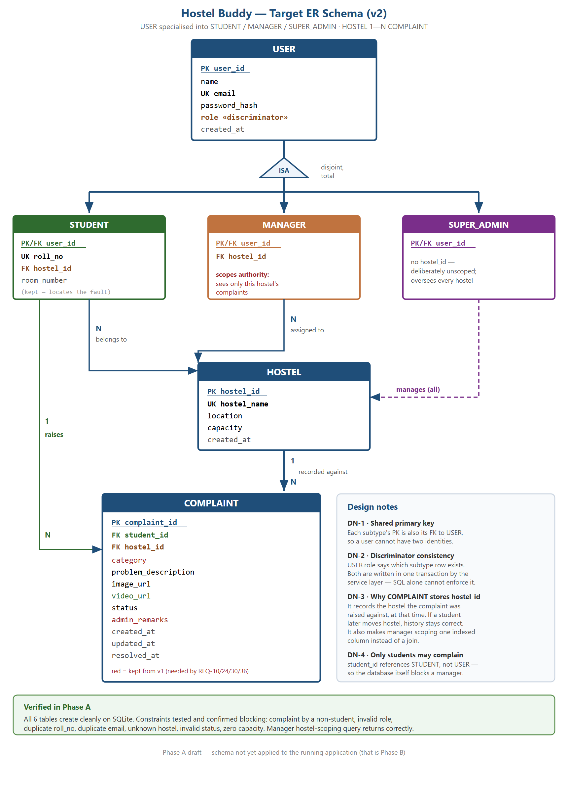
    <figcaption><b>Figure 1</b> — The implemented entity-relationship model: USER specialised into
    STUDENT, MANAGER and SUPER_ADMIN, with HOSTEL 1—N COMPLAINT.</figcaption>
  </figure>
</section>

<!-- ==================== DEFECT TABLE ==================== -->
<section class="break">
  <h2 style="margin-top:0">8. Every Defect at a Glance</h2>
  <p>All twenty-three problems and defects encountered so far, with the milestone at which each was
  found and how it was resolved. Entries marked <b>R</b> are pinned by a check in the regression
  suite, so they cannot return unnoticed.</p>
  <table style="font-size:8.7pt">
    <tr><th style="width:6%">Ref</th><th style="width:27%">Problem</th><th>Root cause and fix</th><th style="width:9%">Found at</th><th style="width:5%">R</th></tr>
    <tr><td>P-1</td><td>Database library needed a C++ compiler</td><td>Native build failed without Visual Studio; switched to Node's built-in SQLite</td><td>30%</td><td>—</td></tr>
    <tr><td>B-2</td><td>Login revealed which emails exist</td><td>Two different error messages; now one generic rejection</td><td>30%</td><td>—</td></tr>
    <tr><td>P-3</td><td>Where to enforce business rules</td><td>Decided on the service layer, not routes — what made the later migration possible</td><td>30%</td><td>—</td></tr>
    <tr><td>P-4</td><td>Seeded administrator silently missing</td><td>Unset environment variable; added start-up warning and production refusal</td><td>30%</td><td>—</td></tr>
    <tr><td>B-1</td><td>Every complaint submission failed with a photo</td><td>Middleware ordered validator before upload; order corrected and documented</td><td>50%</td><td>—</td></tr>
    <tr><td>B-3</td><td>Resolution date kept moving</td><td>Unconditional assignment; now set once, on first reaching Resolved</td><td>50%</td><td>R</td></tr>
    <tr><td>B-4</td><td>Client could set its own status</td><td>Accepted a client field the workflow owns; now forced to Pending</td><td>50%</td><td>R</td></tr>
    <tr><td>B-5</td><td>Inconsistent sessions and blank pages on expiry</td><td>Ad-hoc calls per page; centralised into one network layer</td><td>50%</td><td>—</td></tr>
    <tr><td>P-5</td><td>Uploaded photos not access-controlled</td><td>Accepted for this version with unguessable names; documented, not hidden</td><td>50%</td><td>—</td></tr>
    <tr><td>P-6</td><td>Security policy blocked the landing page</td><td>Moved the inline script to a file instead of weakening the policy</td><td>50%</td><td>—</td></tr>
    <tr><td>B-6</td><td>Tests passed alone, failed together</td><td>Shared state and absolute counts; every suite now owns its data and asserts deltas</td><td>80%</td><td>R</td></tr>
    <tr><td>B-8</td><td>Object stored as "[object Object]"</td><td>Validators converted before checking; rewritten around type predicates</td><td>80%</td><td>R</td></tr>
    <tr><td>B-9</td><td>Status could move backwards</td><td>Only vocabulary enforced, not ordering; added a transition guard</td><td>80%</td><td>R</td></tr>
    <tr><td>B-10</td><td>Tests wrote into the demo database</td><td>No isolation; built a harness with a throwaway database and server</td><td>80%</td><td>R</td></tr>
    <tr><td>B-11</td><td>A requirement was built but unreachable</td><td>Endpoint existed with no page; added the student list screen and nav link</td><td>80%</td><td>R</td></tr>
    <tr><td>B-12</td><td>Upload type trusted the browser</td><td>Declared type treated as fact; now verified by file signature</td><td>80%</td><td>R</td></tr>
    <tr><td>B-13</td><td>Framework errors leaked to users</td><td>Handler returned raw messages; only our own errors keep their text</td><td>80%</td><td>R</td></tr>
    <tr><td>B-14</td><td>"%" in search matched everything</td><td>Parameterisation protects the parser, not the pattern language; escaped it</td><td>80%</td><td>R</td></tr>
    <tr><td>B-15</td><td>Long passwords silently truncated</td><td>The hashing library reads 72 bytes; longer passwords now rejected clearly</td><td>80%</td><td>R</td></tr>
    <tr><td>B-16</td><td>Rate limiting never actually ran</td><td>Enabled only in production, which we never run; now on everywhere but tests</td><td>80%</td><td>R</td></tr>
    <tr><td>B-17</td><td>Six small correctness and layout defects</td><td>Page clamping, image removal, styled 404, dialog timer, mobile actions, logging</td><td>80%</td><td>R</td></tr>
    <tr><td>P-7</td><td>Data model changed under a working system</td><td>Split into seven phases, suite green at each; design verified before any code</td><td>80%</td><td>—</td></tr>
    <tr><td>B-18</td><td>Signed-out users still saw the dashboard</td><td>Guard ran after the page was drawn; moved into the head, before any markup</td><td>80%</td><td>—</td></tr>
  </table>

  <h3>8.1 Where our defects came from</h3>
  <table>
    <tr><th style="width:38%">How it was found</th><th style="width:12%">Entries</th><th>What that tells us</th></tr>
    <tr><td>Auditing the running application with hostile input</td><td><b>11</b></td>
        <td>By far the most productive technique. Counting B-17's six grouped items individually,
            the audit accounted for <b>15 separate defects</b> — and the test suite was green before
            it started and green after it finished</td></tr>
    <tr><td>Building the front end over a finished API</td><td><b>3</b></td>
        <td>A working endpoint is not a working feature; one of these made the flagship feature
            unusable while every server test passed</td></tr>
    <tr><td>Ordinary development and code review</td><td><b>3</b></td>
        <td>Caught early and cheaply, before anyone else depended on them</td></tr>
    <tr><td>Design debates held before writing the code</td><td><b>6</b></td>
        <td>Cheapest of all — decisions and trade-offs that never became defects</td></tr>
    <tr><td colspan="2"><b>Total &nbsp; 23 entries</b></td><td><b>All resolved</b></td></tr>
  </table>
</section>

<!-- ==================== TEST CASES ==================== -->
<section class="break">
  <h2 style="margin-top:0">9. Test Cases Prepared</h2>
  <p>A representative selection from the 265 automated checks. Each names its precondition, the
  action and the result the server must produce; all of them run over real HTTP against a real
  database, not against mocks.</p>

  <h3>9.1 Authentication and accounts</h3>
  <table style="font-size:8.9pt">
    <tr><th style="width:10%">ID</th><th style="width:34%">Test case</th><th style="width:31%">Input</th><th>Expected result</th></tr>
    <tr><td>TC-A1</td><td>Register a valid student</td><td>Name, email, password, roll number, hostel</td><td>Created, with a token; no password hash in the response</td></tr>
    <tr><td>TC-A2</td><td>Reject a duplicate email</td><td>An email already registered</td><td>Conflict, <code>EMAIL_TAKEN</code></td></tr>
    <tr><td>TC-A3</td><td>Reject a duplicate roll number</td><td>A roll number already registered</td><td>Conflict, <code>ROLL_NO_TAKEN</code></td></tr>
    <tr><td>TC-A4</td><td>Reject a non-string name</td><td>An object in place of the name</td><td>Rejected — never stored as text</td></tr>
    <tr><td>TC-A5</td><td>Do not reveal unknown emails</td><td>Unknown email vs wrong password</td><td>Identical rejection for both</td></tr>
    <tr><td>TC-A6</td><td>Reject a forged token</td><td>A token signed with the wrong secret</td><td>Unauthenticated</td></tr>
    <tr><td>TC-A7</td><td>Self-registration cannot create staff</td><td>A staff role supplied in the body</td><td>Account created as a student regardless</td></tr>
    <tr><td>TC-A8</td><td>Reject an over-long password</td><td>A password above the hashing limit</td><td>Rejected with an explanatory message</td></tr>
  </table>

  <h3>9.2 Complaints and the lifecycle</h3>
  <table style="font-size:8.9pt">
    <tr><th style="width:10%">ID</th><th style="width:34%">Test case</th><th style="width:31%">Input</th><th>Expected result</th></tr>
    <tr><td>TC-C1</td><td>Create a complaint</td><td>Valid category and description</td><td>Created, status forced to Pending</td></tr>
    <tr><td>TC-C2</td><td>Attach a photo and a video</td><td>A real image and a real video file</td><td>Created; both stored and served</td></tr>
    <tr><td>TC-C3</td><td>Reject a disguised file</td><td>A text file declared as an image</td><td>Rejected; the file is deleted</td></tr>
    <tr><td>TC-C4</td><td>Reject an unplayable video</td><td>A format the browser cannot play</td><td>Rejected — not on the allowlist</td></tr>
    <tr><td>TC-C5</td><td>Enforce the per-field size limit</td><td>An image above the image limit</td><td>Rejected, <code>FILE_TOO_LARGE</code></td></tr>
    <tr><td>TC-C6</td><td>Owner-only access</td><td>Student B opens Student A's complaint</td><td>Forbidden</td></tr>
    <tr><td>TC-C7</td><td>Edit only while Pending</td><td>Edit a complaint already In Progress</td><td>Refused, <code>NOT_PENDING</code></td></tr>
    <tr><td>TC-C8</td><td>Status cannot move backwards</td><td>Closed → In Progress</td><td>Refused, <code>INVALID_TRANSITION</code></td></tr>
    <tr><td>TC-C9</td><td>Resolution date is set once</td><td>Resolved, then remarks edited</td><td>Date unchanged by the second edit</td></tr>
    <tr><td>TC-C10</td><td>No open complaint has a resolution date</td><td>Query the whole table</td><td>Zero such rows</td></tr>
    <tr><td>TC-C11</td><td>Deleting removes the attachments</td><td>Delete a complaint with both files</td><td>Row gone; both files no longer served</td></tr>
  </table>

  <h3>9.3 Roles and hostel scoping</h3>
  <table style="font-size:8.9pt">
    <tr><th style="width:10%">ID</th><th style="width:34%">Test case</th><th style="width:31%">Input</th><th>Expected result</th></tr>
    <tr><td>TC-S1</td><td>Manager sees only their hostel</td><td>Manager lists all complaints</td><td>Only their own hostel's rows</td></tr>
    <tr><td>TC-S2</td><td>Manager cannot read another hostel</td><td>Open a complaint from another hostel</td><td>Forbidden</td></tr>
    <tr><td>TC-S3</td><td>Manager cannot modify another hostel</td><td>Change its status</td><td>Forbidden; complaint verifiably untouched</td></tr>
    <tr><td>TC-S4</td><td>Scope cannot be widened by searching</td><td>Search another hostel's complaint id</td><td>No results</td></tr>
    <tr><td>TC-S5</td><td>Manager cannot create hostels</td><td>Manager posts a new hostel</td><td>Forbidden — would let them redraw their own authority</td></tr>
    <tr><td>TC-S6</td><td>Manager cannot provision managers</td><td>Manager creates a manager account</td><td>Forbidden</td></tr>
    <tr><td>TC-S7</td><td>A manager must have a hostel</td><td>Provision one with no hostel</td><td>Rejected as invalid</td></tr>
    <tr><td>TC-S8</td><td>Students cannot reach staff routes</td><td>Student calls the queue and staff dashboard</td><td>Forbidden on both</td></tr>
    <tr><td>TC-S9</td><td>A hostel in use cannot be deleted</td><td>Delete a hostel that still has students</td><td>Refused, <code>HOSTEL_IN_USE</code></td></tr>
  </table>

  <h3>9.4 Robustness and security</h3>
  <table style="font-size:8.9pt">
    <tr><th style="width:10%">ID</th><th style="width:34%">Test case</th><th style="width:31%">Input</th><th>Expected result</th></tr>
    <tr><td>TC-R1</td><td>Search wildcards are literal</td><td>Search for the wildcard characters</td><td>No match-everything behaviour</td></tr>
    <tr><td>TC-R2</td><td>Page numbers are clamped</td><td>A page number past the end</td><td>Clamped to the last real page</td></tr>
    <tr><td>TC-R3</td><td>No framework internals leak</td><td>Malformed request body</td><td>Our own message and code</td></tr>
    <tr><td>TC-R4</td><td>Unknown pages get our own 404</td><td>A mistyped address</td><td>The styled page; JSON for API routes</td></tr>
    <tr><td>TC-R5</td><td>Student list is staff-only</td><td>Student requests it</td><td>Forbidden; no password hashes ever returned</td></tr>
  </table>

  <div class="viva"><span class="lbl">Unit-level checks</span> Alongside these, the pure functions
  that carry the rules — the status-transition comparison, the search escaper, the type predicates
  and the upload signature detector — are each exercised directly by the cases above, since every one
  of them was written in response to a specific defect.</div>
</section>

<!-- ==================== LIVE PRODUCT ==================== -->
<section class="break">
  <h2 style="margin-top:0">10. The Product Running Now</h2>
  <p>The figures in this section were captured from the application <b>running on a live server with
  the demo data loaded</b>, at the state of the code described by this report. They are not mockups
  or wireframes. Before capture the full suite was run: <b>265 checks, all passing</b>.</p>
  <p>The demo data is three hostels, one super admin, three managers, six students and thirteen
  complaints spread across all four states.</p>

  <h3>10.1 Entry and registration</h3>
  <figure class="shot">
    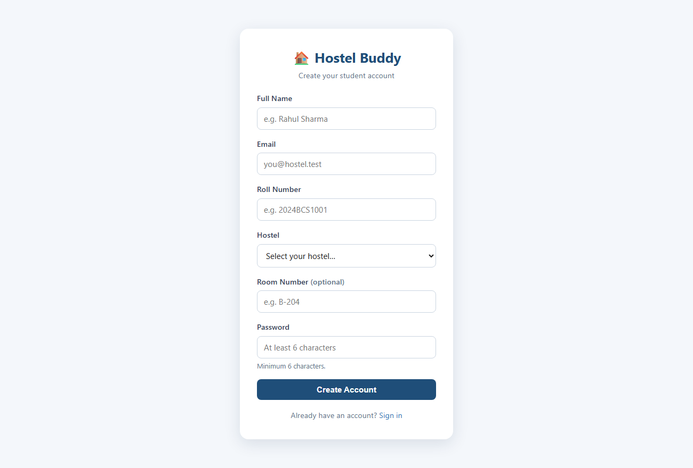
    <figcaption><b>Figure 2 · Registration.</b> A student signs up with a name, email, password,
    <b>roll number</b> and the <b>hostel they live in</b>, chosen from a live list loaded from the
    server. Registration always creates a student — a staff role supplied in the request is ignored,
    because manager accounts are provisioned by the super admin and never self-registered.</figcaption>
  </figure>
  <figure class="shot">
    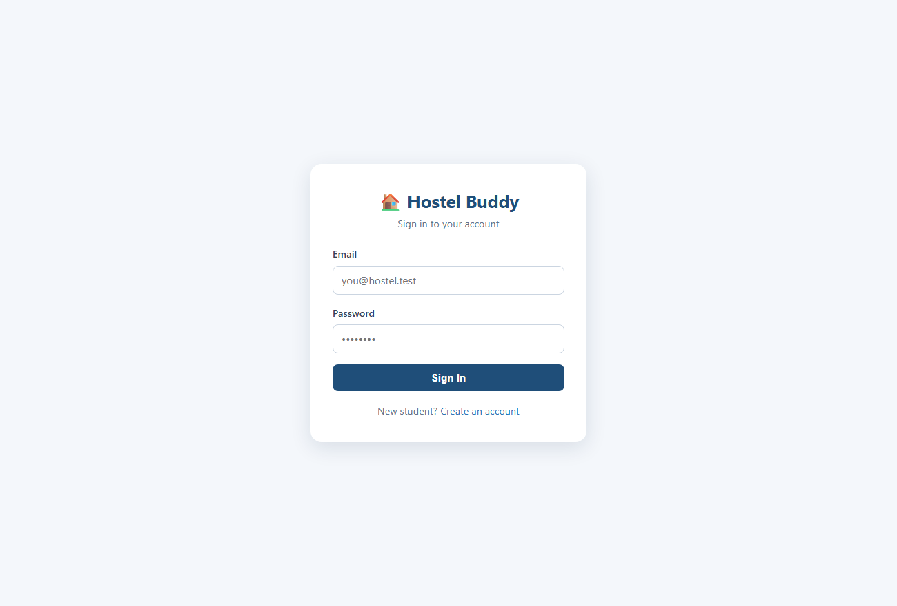
    <figcaption><b>Figure 3 · Login.</b> One form for all three roles; the server decides which and
    sends the user to the right home screen. An unknown email and a wrong password produce the same
    message, so the page cannot be used to discover which accounts exist. Repeated failures from one
    address are rate-limited.</figcaption>
  </figure>

  <h3>10.2 What a student can do</h3>
  <figure class="shot">
    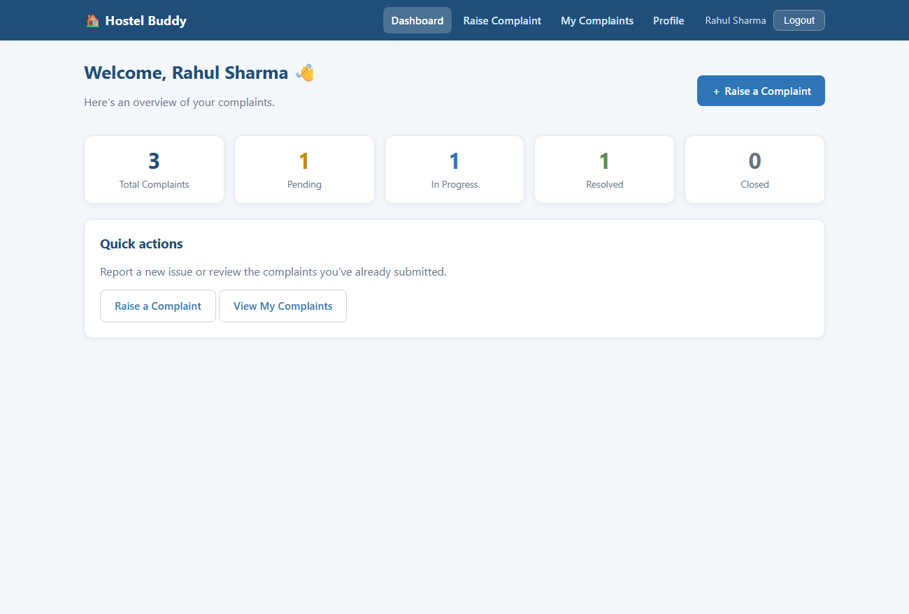
    <figcaption><b>Figure 4 · Student dashboard.</b> The student's own complaints counted by state —
    total, pending, in progress, resolved and closed. These figures come from a database aggregation
    scoped to this student; no other student's complaints are ever counted here.</figcaption>
  </figure>
  <figure class="shot">
    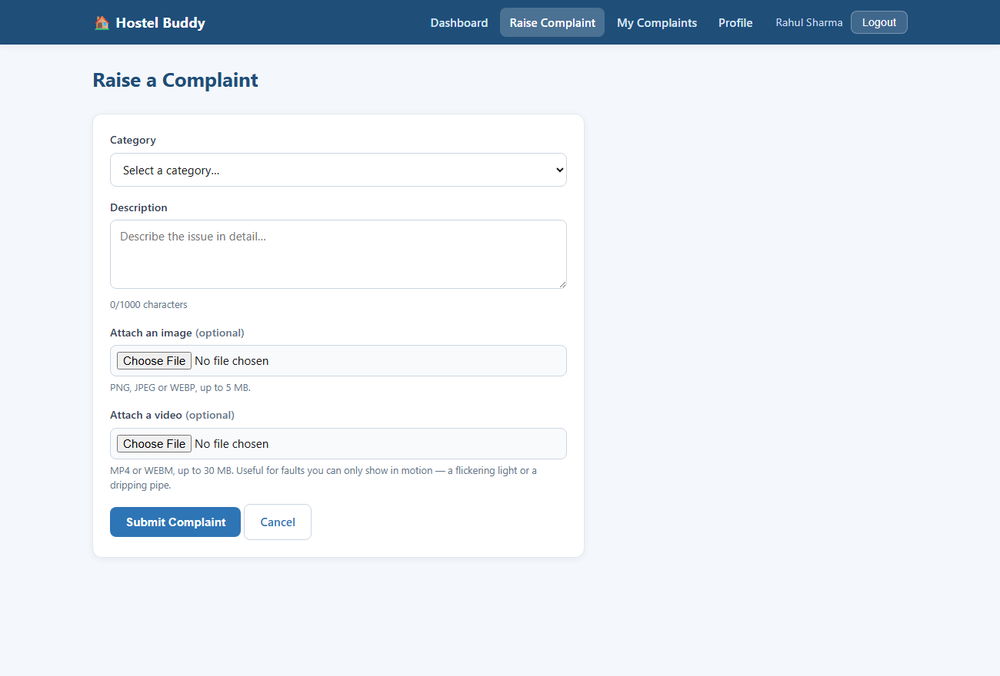
    <figcaption><b>Figure 5 · Raising a complaint.</b> A category from the fixed list, a description
    with a live character counter, and two optional attachments — a <b>photo</b> and a <b>video</b>,
    each with its own size limit. Both are checked by their actual file signature on the server, so a
    file that merely claims to be an image or a video is refused. The complaint's hostel is taken
    from the student's own record, never from the form, so nobody can file against a hostel they do
    not live in.</figcaption>
  </figure>
</section>

<section>
  <figure class="shot" style="margin-top:0">
    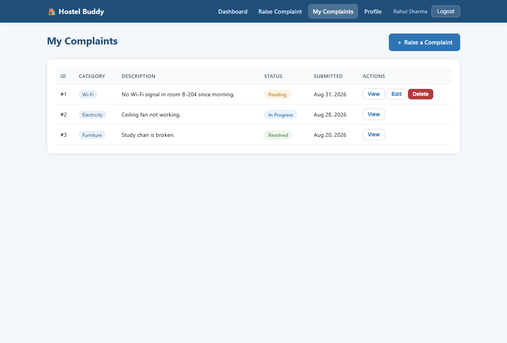
    <figcaption><b>Figure 6 · My Complaints.</b> Every complaint this student has raised, with its
    current status and the staff remarks. <b>Edit</b> and <b>Delete</b> appear only while a complaint
    is still Pending — once a manager has started work the buttons are gone, and the server refuses
    the operation even if the request is made directly.</figcaption>
  </figure>

  <h3>10.3 Hostel scoping — the same screen, two roles</h3>
  <p>This pair is the clearest demonstration of the three-role model. Both figures are the
  <b>same page, from the same code</b>. The only difference is who is signed in.</p>

  <figure class="shot">
    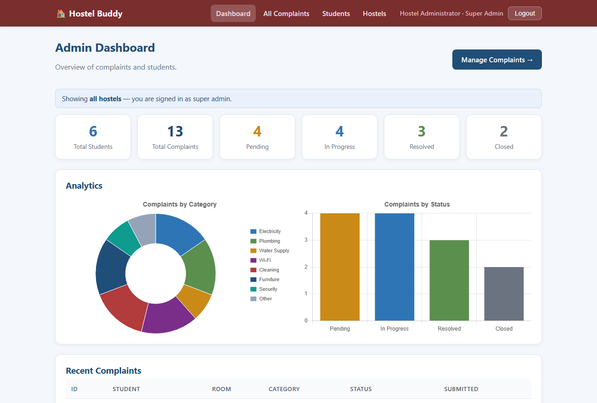
    <figcaption><b>Figure 7 · Dashboard as the super admin.</b> The banner reads "Showing <b>all
    hostels</b>". Six students, thirteen complaints — the whole institution, with the category and
    status charts covering every hostel.</figcaption>
  </figure>

  <figure class="shot">
    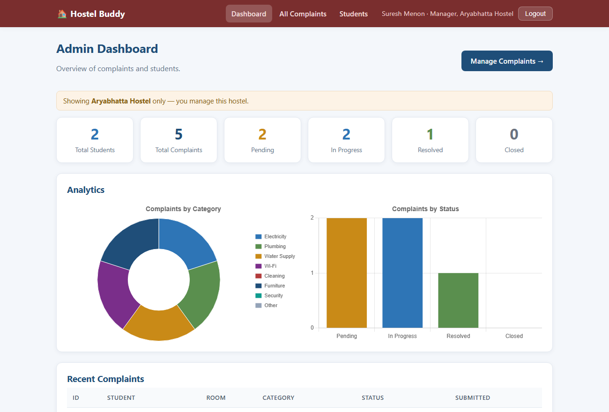
    <figcaption><b>Figure 8 · The same dashboard as a hostel manager.</b> The banner now reads
    "Showing <b>Aryabhatta Hostel</b> only — you manage this hostel". Two students, five complaints;
    every chart redrawn from that hostel alone. The navigation has also lost the <b>Hostels</b> link,
    which only the super admin may use. The narrowing happens in SQL, so the other hostels' rows are
    never loaded — they are not fetched and then hidden.</figcaption>
  </figure>
</section>

<section>
  <h3 style="margin-top:0">10.4 Working the complaint queue</h3>
  <figure class="shot">
    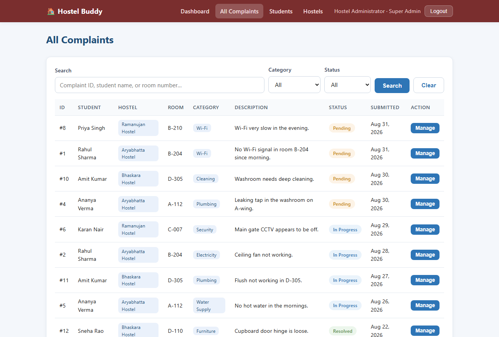
    <figcaption><b>Figure 9 · The complaint queue as the super admin.</b> Every complaint in every
    hostel, with a <b>Hostel</b> column, free-text search over complaint id, student name, roll number
    and room, category and status filters, and pagination. <b>Manage</b> opens the complaint, shows
    its photo and video, and offers only the statuses the server will accept — the lifecycle moves
    forward only.</figcaption>
  </figure>
  <figure class="shot">
    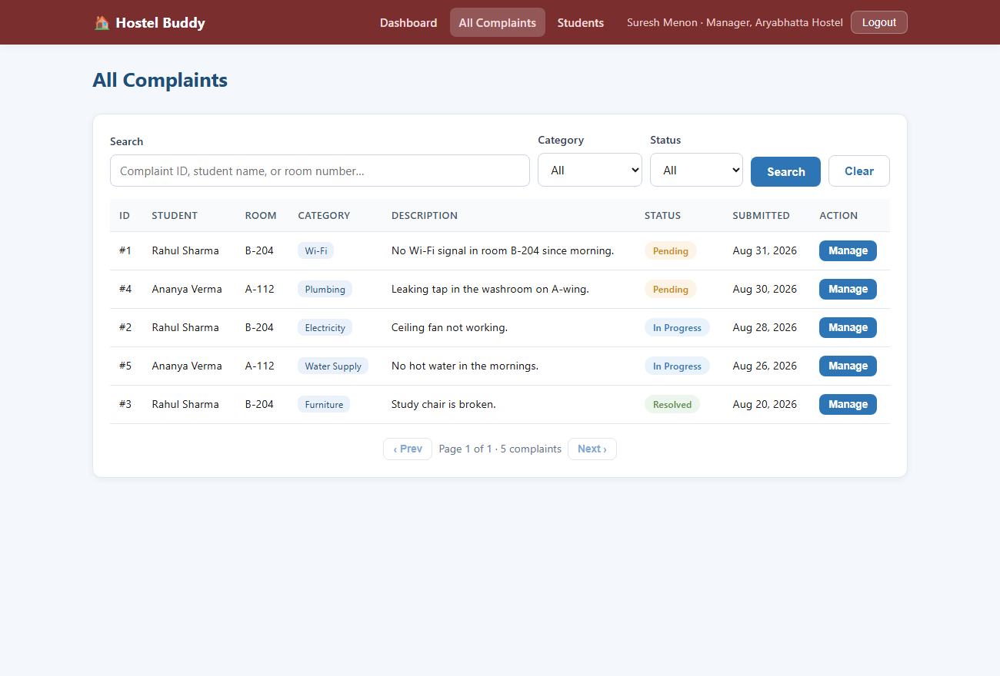
    <figcaption><b>Figure 10 · The same queue as a hostel manager.</b> Five rows instead of thirteen,
    all Aryabhatta. A manager who requests another hostel's complaint directly — by id, by search, or
    by attempting a status change — is refused. That refusal is tested in both directions, and the
    complaint is verified afterwards to be untouched.</figcaption>
  </figure>
</section>

<section>
  <h3 style="margin-top:0">10.5 Administration</h3>
  <figure class="shot" style="margin-top:0">
    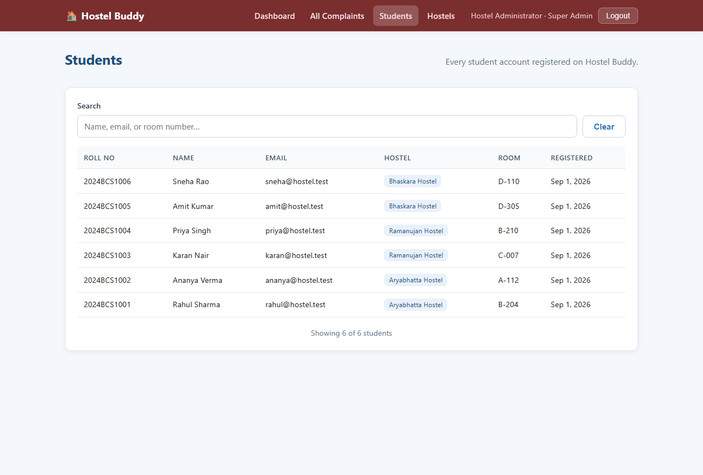
    <figcaption><b>Figure 11 · Registered students.</b> Name, email, roll number, hostel and room,
    filterable from the browser. Password hashes are never included in the response. A manager sees
    only the students of their own hostel; the super admin sees all of them.</figcaption>
  </figure>
  <figure class="shot">
    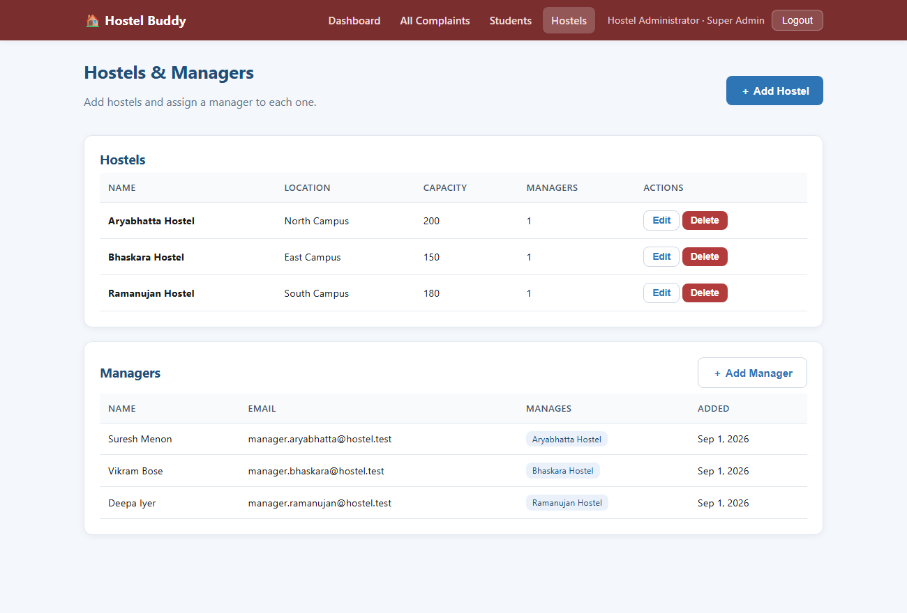
    <figcaption><b>Figure 12 · Hostels and managers — super admin only.</b> Hostels are created,
    renamed and removed here, and manager accounts are created and bound to one hostel each. A
    hostel that still has students, managers or complaints cannot be deleted; the server explains
    what is blocking it rather than silently orphaning rows. A manager who opens this page is sent
    back to their dashboard, and every button on it is refused by the server as well — a manager must
    not be able to edit the structure that scopes their own authority.</figcaption>
  </figure>
  <figure class="shot">
    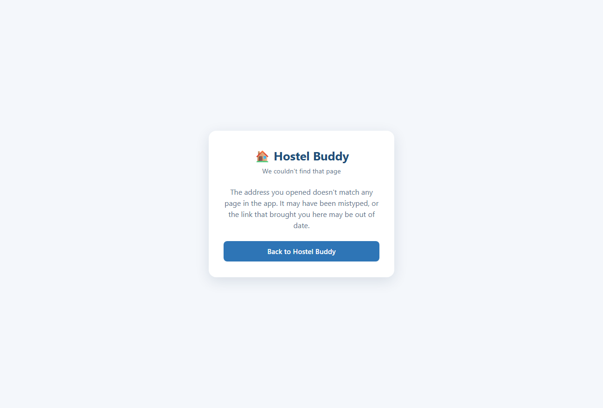
    <figcaption><b>Figure 13 · A mistyped address.</b> The application's own page rather than the
    framework's default error, so a wrong link never drops the user out of the product. API routes
    return the same condition as JSON.</figcaption>
  </figure>

  <h3>10.6 What is demonstrably working</h3>
  <table>
    <tr><th style="width:30%">Capability</th><th>Evidence in this section</th></tr>
    <tr><td>Registration with roll number and hostel</td><td>Figure 2 — the hostel list is loaded live from the server</td></tr>
    <tr><td>One login for three roles</td><td>Figure 3, and each later figure is a different signed-in role</td></tr>
    <tr><td>Student complaint lifecycle</td><td>Figures 4–6 — raise with attachments, track, edit while Pending</td></tr>
    <tr><td>Photo and video attachments</td><td>Figure 5 — both fields, each with its own limit</td></tr>
    <tr><td><b>Hostel scoping</b></td><td>Figures 7 vs 8 and 9 vs 10 — the same page, different data</td></tr>
    <tr><td>Search, filters, pagination</td><td>Figures 9 and 10</td></tr>
    <tr><td>Status workflow with remarks</td><td>Figure 9 — only forward transitions are offered</td></tr>
    <tr><td>Analytics for both staff roles</td><td>Figures 7 and 8 — charts redrawn per scope</td></tr>
    <tr><td>Hostel and manager management</td><td>Figure 12 — super admin only, in the page and on the server</td></tr>
    <tr><td>Errors handled inside the product</td><td>Figure 13</td></tr>
  </table>
</section>

<!-- ==================== REMAINING + CONCLUSION ==================== -->
<section class="break">
  <h2 style="margin-top:0">11. The Remaining 20%</h2>
  <table>
    <tr><th style="width:26%">Item</th><th>What is left to do</th><th style="width:12%">Status</th></tr>
    <tr><td><b>Session revocation</b></td>
        <td>Signing out clears the browser's session, but the token itself stays valid until it
            expires. A server-side invalidation step is designed and scheduled.</td>
        <td><span class="pill todo">Remaining</span></td></tr>
    <tr><td><b>Super-admin scope review</b></td>
        <td>Deciding whether the super admin should act on complaints directly or oversee them
            read-only, leaving the queue to hostel managers.</td>
        <td><span class="pill todo">Remaining</span></td></tr>
    <tr><td><b>Document revision</b></td>
        <td>The SRS, the SADD and the architecture presentation still describe the earlier two-role
            design and must be brought onto the three-role model — ER diagram, data dictionary, class
            and sequence diagrams, and the traceability matrix.</td>
        <td><span class="pill todo">Remaining</span></td></tr>
    <tr><td><b>Regression coverage</b></td>
        <td>Pinning the two most recent fixes with their own checks, and folding the browser-level
            page-guard verification into the standard suite.</td>
        <td><span class="pill todo">Remaining</span></td></tr>
    <tr><td><b>Demonstration video</b></td>
        <td>A recorded walkthrough of all three roles, end to end.</td>
        <td><span class="pill todo">Remaining</span></td></tr>
    <tr><td><b>Deployment</b></td>
        <td>Hosting the application so it can be reached without a local checkout.</td>
        <td><span class="pill todo">Remaining</span></td></tr>
  </table>

  <h2>12. Conclusion</h2>
  <p>At 80%, Hostel Buddy is a working three-role, multi-hostel complaint management system. Every
  functional requirement in the SRS is implemented and reachable from the interface, the entity model
  matches the one supplied by the instructor, and <b>265 automated checks run on every push and all
  of them pass</b>. Section 10 shows the product actually running, screen by screen.</p>
  <p>The part of this milestone we would defend most strongly is the audit. Our test suite was green
  before it began and green after it ended, yet the audit found fifteen defects — including one that
  let a complaint sit in a contradictory state, one that stored arbitrary objects as text, and one
  that meant the brute-force protection we had presented in our architecture review had never run at
  all. That gap between "the tests pass" and "the system is correct" is the most valuable thing the
  project has taught us, and it changed how we work: <b>we now try to break each feature before we
  call it finished.</b></p>
  <p>The remaining 20% is largely consolidation — finishing the session-revocation work, bringing the
  formal documents onto the current data model, and recording the demonstration. The engineering is
  in place.</p>

  <div class="sig">
    <div>Group 19 — Team Signature</div>
    <div>Faculty Signature</div>
  </div>
</section>

<script src="paged.polyfill.js"></script>
